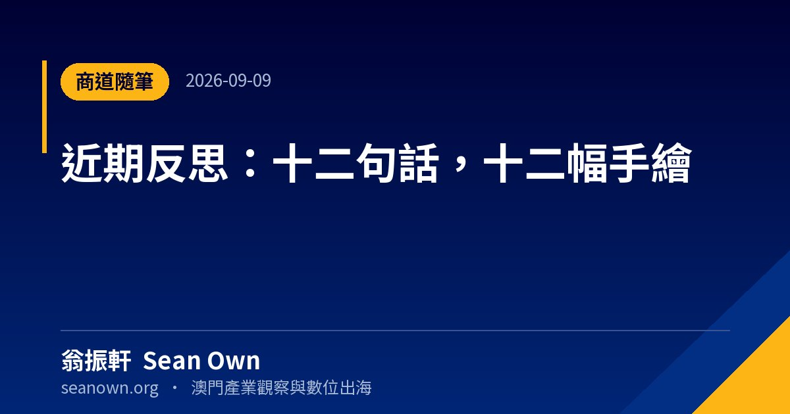
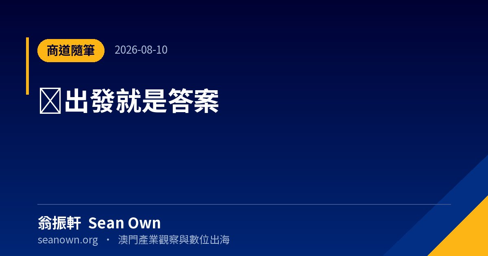

兩篇都是一念之間記下來的。
〈兩個念頭〉一篇收了兩則：一則說趁還能走、還能看，多出去走走，在路上重新看見自己；一則說無名指長過食指，是命運遞給你的牌，但牌局的勝負藏在每一天的選擇裡。
〈十二句話〉是最近一段時間的十二句反思，原本的構想是配十二幅手繪。
都不是長文，也不打算寫成長文。這個輯就是放這種東西：想到了，記下來，就這樣。

把近期的閱讀、行走與觀察，濃縮成十二句話。每一句配一幅手繪線稿：左邊是畫，右邊是原話、背景與認知啟示。不追求體系完整…

兩則短念頭，一篇記下來。 無名指長過食指｜手相啟示民間手相說法：男看左手，女看右手，若是無名指長過食指，一生會遇上三…